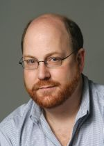
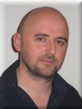
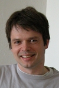

DEBS 2010 is
sponsored by


DEBS 2010 is
in cooperation with:

") |
KeynotesContinuous Analytics: Data Stream Query Processing in Practice
Michael J. Franklin - UC Berkeley and Truviso, Inc.
Stream query processing has been one of the more popular topics in database research so far this century. The basic idea is to provide database-style query processing over data on-the-fly as they arrive at the system. Compared to the store-first, query-later approach followed by traditional database systems, stream query processing holds the promise for dramatically improved efficiency and reduced latency. Work in this area was originally motivated by "real-time" data-intensive scenarios such as sensor networks, financial trading applications, and network security. Lately, stream processing has been moving from the research lab into the real world through efforts at start-up companies, traditional database vendors, and open source projects. Not surprisingly, the practical uses and advantages of the technology are turning out to be different than many had originally expected. In this talk, I'll survey the state of the art in stream query processing and related technologies such as event processing, discuss some of the implications for data-intensive system architectures, and provide my views on the future role of this technology from both a research and a commercial perspective. In particular, I'll describe the notion of Continuous Analytics, which leverages Stream Query Processing techniques to solve some of the inherent bottlenecks that have existed in database systems since their inception.  Michael J. Franklin is a Professor of Computer Science at UC Berkeley focusing on new approaches for data management and data analysis. His recent projects have spanned systems ranging from dynamic networks of tiny wireless sensor devices to large-scale scientific grid computing and cloud computing infrastructures. He is a co-founder and CTO of Truviso, Inc. a real-time data analytics company that enables customers to quickly make sense of diverse, high-speed, continuous streams of information. He is a Fellow of the Association for Computing Machinery, and a recipient of the National Science Foundation CAREER award and the ACM SIGMOD "Test of Time" award. Challenges & directions in distributed event-based systems for a web-scale enterprise
David Jeffery - Betfair
Betfair is the world's leading online betting exchange, a concept it has pioneered. This presentation will describe how Betfair has used distributed event-based systems to meet its continuous technology challenge – to manage the explosive growth in transaction numbers and the cost of each transaction whilst offering the very best service to its customers, the business, its partners and regulators. The speaker will outline the role he sees distributed event-based systems playing in the future in dynamic & reactive, web-scale transaction processing systems.  Dr David Jeffery is Chief Software Architect at Betfair, where he has been for the last eight years. His professional interests include event-driven architecture, event processing, functional programming, distributed systems and utility computing. Before joining Betfair, David worked as a researcher in Australia and Europe. He was a Research Fellow at Monash University in the Optimization and Constraint Programming research group and holds a Bachelor of Engineering (Software) and a PhD in Computer Science from The University Of Melbourne. His PhD research was in the field of logic/functional programming, focussing on type system design, type theory, compiler implementation and software component technologies. StreamMine: A scalable and dependable event processing platform
Christof Fetzer - Dresden University of Technology
StreamMine is the dependable distributed event processing framework currently being developed within the System Engineering Group at the Technische Universität Dresden, Germany. Our research focuses on two aspects. (1) We investigate scalable and dependable event processing across hundreds of computer nodes. These distributed event processing aspects are investigated in the context of the EU FP7 STREAM project. (2) We also investigate the scalability of the event-processing engine within a multi-core machines. Furthermore, we also address tolerance against software bugs in this context. The multi-core aspects are investigated in the context of the EU FP7 project VELOX. In this talk, I will present the architecture of StreamMine and the challenges that we have been facing while building StreamMine. Furthermore, I will introduce our stream map/reduce (SMR) approach to scalable event processing and I will show some performance figures for our SMR implementation.  Christof Fetzer received his Ph.D. from UC San Diego (1997). As a student he received a two-year scholarship from the DAAD and won two best student paper awards (SRDS and DSN). He was a finalist of the 1998 Council of Graduate Schools/UMI distinguished dissertation award and won an IEE mather premium in 1999. Dr. Fetzer joined AT&T Labs-Research in August 1999 and was a principal member of technical staff until March 2004. Since April 2004, he has an endowed chair (Heinz-Nixdorf endowment) in Systems Engineering in the Computer Science Department at the Dresden University of Technology. He is the chair of the Computational Engineering International Masters Program at the Computer Science Department. Christof Fetzer has published over 100 research papers. |